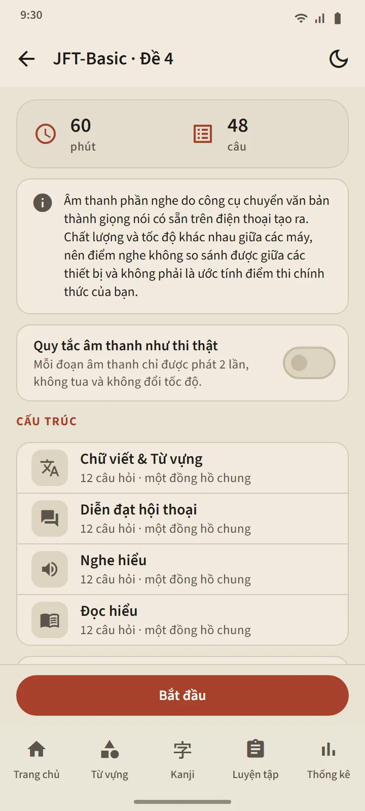
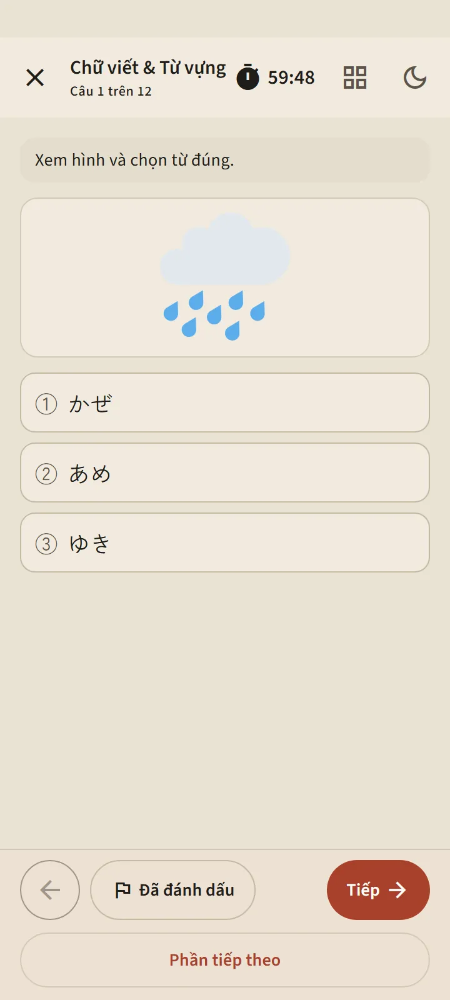
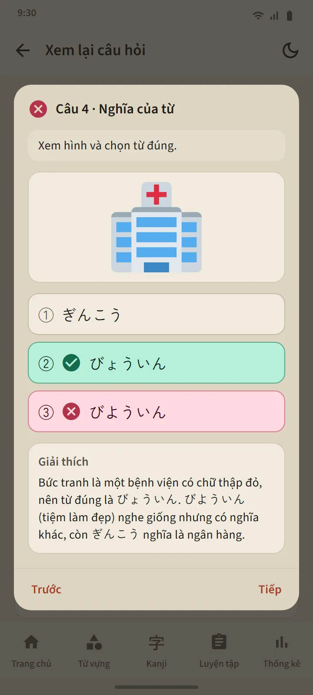

Sáu cấp độ, 24 bộ đề
Mỗi thẻ cấp độ trong tab Luyện tập mở ra trang cấp độ: một nút Bắt đầu, các ô bộ đề được đánh số, và Lịch sử. Khi đã làm hết các bộ đề, Luyện tập tổng hợp sẽ mở, đưa những câu hỏi bạn chưa từng gặp lên trước. Các bộ đề mới đến qua các bản cập nhật ứng dụng.
| Kỳ thi | Số bộ đề | Số câu hỏi mỗi bộ | Thời gian |
|---|---|---|---|
| JFT-Basic | 8 | 48 | 60 phút |
| JLPT N5 | 8 | 68 | 90 phút |
| JLPT N4 | 2 | 85 | 115 phút |
| JLPT N3 | 2 | 102 | 140 phút |
| JLPT N2 | 2 | 107 | 155 phút |
| JLPT N1 | 2 | 101 | 165 phút |


Dạng câu hỏi theo đúng các kỳ thi thật
Câu hỏi JFT-Basic có ba lựa chọn (bốn lựa chọn ở phần ngữ pháp), tình huống và đề bài bằng ngôn ngữ của người học, và nhiều câu có hình minh họa, giống như các câu hỏi mẫu chính thức. Câu hỏi JLPT có bốn lựa chọn, furigana phù hợp với cấp độ, và các bài đọc dưới nhiều dạng: truyện ngắn, ghi chú, thông báo, tin nhắn, email và bảng thông tin. Mọi bộ đề đều được rà soát trước khi phát hành, và không có câu hỏi chính thức nào bị sao chép.
Trước khi bắt đầu, màn hình giới thiệu cho bạn thấy cấu trúc của bộ đề đó: các phần, số câu hỏi và thời gian. Cách tính giờ theo đúng các kỳ thi thật: một tổng thời gian chung ở JFT-Basic, thời gian riêng cho từng phần ở JLPT. Sau khi bạn chuyển sang phần tiếp theo, phần trước sẽ đóng lại, giống như trong phòng thi. Bạn có thể gắn cờ những câu còn phân vân, tạm thời thoát ra (đồng hồ vẫn chạy), và tiếp tục từ tab Luyện tập.


Phần nghe bằng giọng tiếng Nhật của điện thoại
Kịch bản bài nghe được đọc bằng công cụ text-to-speech tiếng Nhật của điện thoại, với một giọng khác nhau cho mỗi người nói. Các đáp án chỉ được nghe, không in ra, giống như trong kỳ thi thật; JFT-Basic và N5 dùng đáp án bằng hình ảnh. Công tắc “Quy tắc âm thanh như thi thật” giới hạn số lần phát đúng như kỳ thi thật cho phép: hai lần ở JFT-Basic, một lần ở JLPT.
Vì giọng đọc đến từ từng điện thoại, chất lượng khác nhau giữa các thiết bị; nếu điện thoại chưa có giọng tiếng Nhật, ứng dụng sẽ hướng dẫn cách cài và phần nghe sẽ được bỏ qua cho đến khi giọng đó có mặt.

Kết quả theo thang điểm chính thức, rồi giải thích từng câu hỏi
Kết quả JFT-Basic được vẽ trên thang 10–250 với các mốc 145, 175 và 200 cùng tên các mức, A1, A2.1 và A2.2, kèm theo việc mỗi mức được dùng để làm gì trong kỳ thi thật. Kết quả JLPT hiển thị từng phần tính điểm so với điểm tối thiểu của phần đó, vì trong kỳ thi thật chỉ cần một phần dưới mức tối thiểu là không đạt. Cả hai đều kèm phần trăm đúng theo từng phần và từng dạng câu hỏi.
Nút Xem lại câu hỏi mở từng câu hỏi cùng câu trả lời của bạn, đáp án đúng và lời giải thích; các câu hỏi nghe còn hiện cả kịch bản. Lời giải thích có 12 ngôn ngữ. Lịch sử của mỗi cấp độ lưu các lượt làm gần nhất, còn biểu đồ điểm nằm trong tab Thống kê.
Các điểm số này là ước tính để theo dõi tiến bộ, không phải dự đoán kết quả thi chính thức của bạn.


Miễn phí và Premium
Mọi bộ đề đều mở trong bản miễn phí. Sau khi bạn nhấn Bắt đầu, lượt làm tiếp theo ở cấp độ đó bị khóa trong 7 ngày; các cấp độ khác vẫn mở, còn lịch sử và lời giải thích thì không bao giờ bị khóa. Trong thời gian bị khóa, bạn có thể mở thêm một lượt bằng cách xem một quảng cáo. Premium không có thời gian chờ. Quảng cáo không bao giờ xuất hiện trên màn hình câu hỏi, với bất kỳ ai.